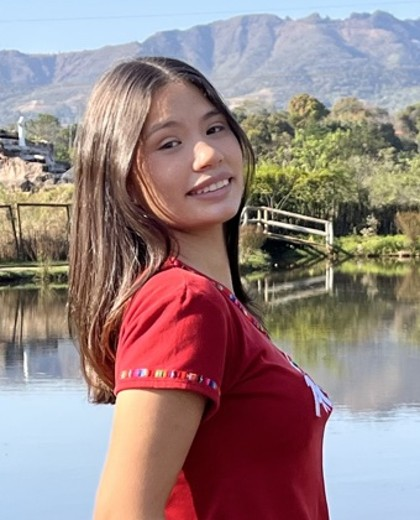

Edição de vídeo
Cortes precisos, ritmo envolvente, cor e legendas que valorizam cada cena.
Olá, eu sou
Editora de vídeo · Criadora de conteúdo · Criativos com IA
Transformo ideias em narrativas visuais que prendem a atenção no primeiro segundo e permanecem na memória. Uno a sensibilidade da edição ao poder da inteligência artificial para entregar conteúdos com estética de cinema e propósito estratégico.

Cortes precisos, ritmo envolvente, cor e legendas que valorizam cada cena.
Cenas cinematográficas geradas com Higgsfield e Seedance 2.5.
Posts, capas e peças gráficas de alto padrão, criadas com agilidade.
Stories com narrativa, estética e intenção — do básico ao intermediário.
Planejamento de postagem para que o conteúdo certo chegue na hora certa.
 CapCutEdição do essencial ao avançado: cortes, transições, efeitos e legendas dinâmicas.Abrir ↗
Higgsfield + Seedance 2.5Vídeos gerados por IA com movimentos de câmera cinematográficos, incluindo o modelo Seedance 2.5. Com engenharia de prompts: cada crédito é investimento, e prompts precisos evitam desperdício, poupando tempo e dinheiro.Abrir ↗
GrokInteligência artificial como copiloto criativo para roteiros, ideias e produtividade, com engenharia de prompts que gera respostas certeiras e acelera cada etapa.Abrir ↗
CapCutEdição do essencial ao avançado: cortes, transições, efeitos e legendas dinâmicas.Abrir ↗
Higgsfield + Seedance 2.5Vídeos gerados por IA com movimentos de câmera cinematográficos, incluindo o modelo Seedance 2.5. Com engenharia de prompts: cada crédito é investimento, e prompts precisos evitam desperdício, poupando tempo e dinheiro.Abrir ↗
GrokInteligência artificial como copiloto criativo para roteiros, ideias e produtividade, com engenharia de prompts que gera respostas certeiras e acelera cada etapa.Abrir ↗
 Design com IAPeças gráficas e posts com acabamento profissional. Prompts bem construídos traduzem a sua visão em imagem com rapidez.
Design com IAPeças gráficas e posts com acabamento profissional. Prompts bem construídos traduzem a sua visão em imagem com rapidez. StorymakerStories que conectam e engajam — linguagem, estética e sequência narrativa.
StorymakerStories que conectam e engajam — linguagem, estética e sequência narrativa. Criatividade & referênciasPesquisa de referências e construção de conceito para cada projeto.
Criatividade & referênciasPesquisa de referências e construção de conceito para cada projeto.Por dentro das ferramentas
Escuta atenta do objetivo e desenvolvimento do conceito criativo.
Estrutura narrativa com gancho forte, ritmo e mensagem clara.
Direção de cena, luz e enquadramento para captar o melhor de cada take.
Montagem, cor, som, legendas e recursos de IA com acabamento de cinema.
Formatos, capas e legendas otimizados para cada plataforma.
Calendário, horários e análise de resultados para crescer com consistência.
Uma narrativa de mistério conduzida do roteiro à finalização: direção de cenas, montagem, tratamento de cor e legendas. Linguagem de cinema em formato horizontal.
A mesma fala, em dois momentos: o take bruto, exatamente como saiu da câmera, e a cena finalizada, com novo cenário, tratamento de cor e legendas. Aperte o play e assista lado a lado, em sincronia.
Conceber, roteirizar, gravar e editar Reels completos, com gancho forte e ritmo que retém.
Criar cenas cinematográficas no Higgsfield e no Seedance 2.5, com controle de câmera e estética.
Escrever prompts precisos que acertam de primeira, poupando créditos, tempo e dinheiro.
Produzir posts, capas e carrosséis com acabamento profissional em uma fração do tempo.
Dominar luz, enquadramento, áudio e configurações para captar imagens com padrão profissional.
Oferecer Storymaker como serviço extra ou freelance: eventos, marcas, bastidores e lançamentos.
Cuidar de perfis com profissionalismo, da criação à publicação, com identidade consistente.
Planejar linhas editoriais, calendários e horários de postagem, analisando resultados para evoluir.
Transformar a IA em assistente diário para ideias, roteiros, legendas e organização do trabalho.
Ao longo da formação, você constrói o seu próprio portfólio profissional: projetos autorais, bem apresentados e prontos para conquistar os primeiros clientes.
Um estágio de verdade, no ambiente onde eu atuo profissionalmente. Você acompanha o dia a dia, participa das demandas reais e coloca em prática tudo o que aprendeu, com orientação próxima.
Prompts testados para vídeo, imagem e texto, prontos para adaptar e usar.
O passo a passo para não esquecer nada antes, durante e depois de gravar.
Uma estrutura pronta para planejar o mês com estratégia e constância.
A aula presencial é o ponto de encontro, mas o aprendizado acontece a semana inteira. Você chega a cada sábado afiada, já dominando a linguagem, para que o nosso tempo juntas seja dedicado à prática.
Duas horas de prática guiada, demonstrações e correções feitas lado a lado.
Conteúdos escolhidos a dedo para assistir no seu ritmo e chegar à próxima aula com a teoria em dia.
Exercícios semanais que transformam o que você aprendeu em habilidade real.
Acompanho o seu progresso e a sua evolução de perto. Mandou mensagem, eu respondo.
Se você fosse aprender cada tema separadamente*
Aqui é totalmente diferente.
R$ 250por quinzena
Valor quinzenal
Mensal: consultar
Acompanhamento diário e individual: eu conheço o seu ritmo, corrijo as suas atividades e oriento cada passo da sua evolução, com aula presencial semanal e todos os módulos incluídos.
Sua próxima história merece ser contada com excelência. Sua vaga na Criativa Pro começa com uma mensagem.
💬 Quero ser aluna da Criativa Pro Voltar ao início ↑